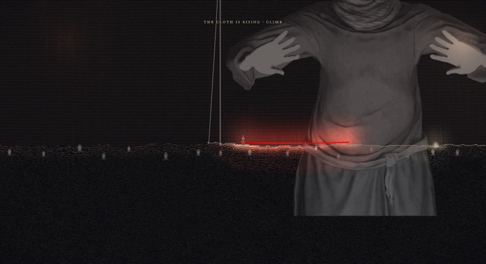
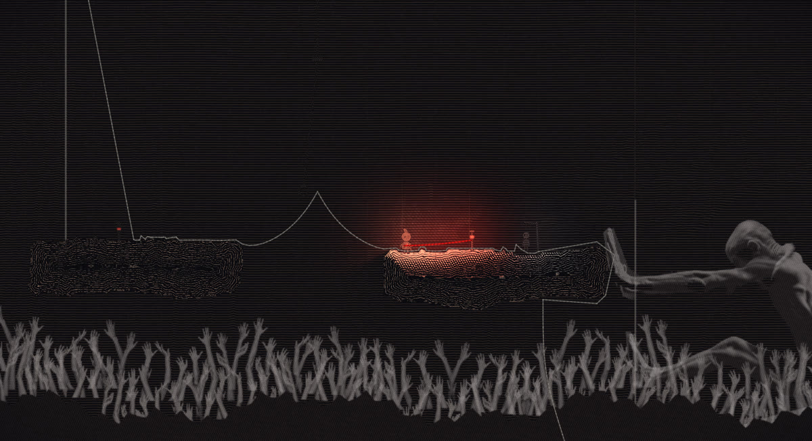
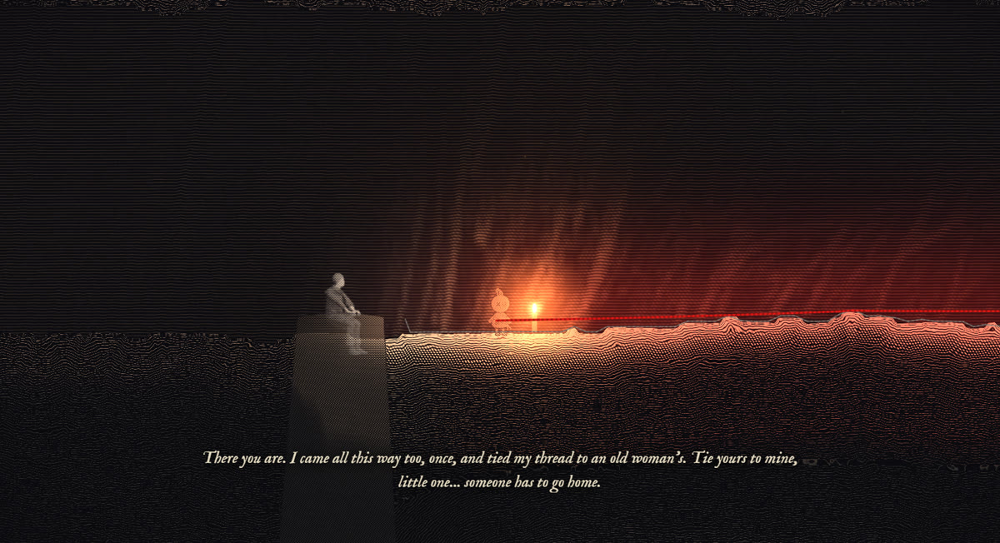
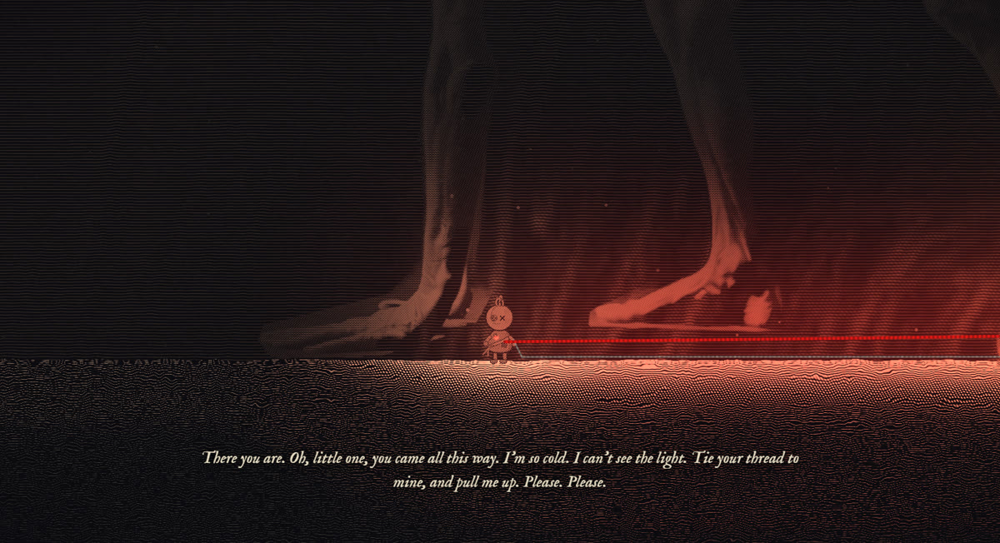
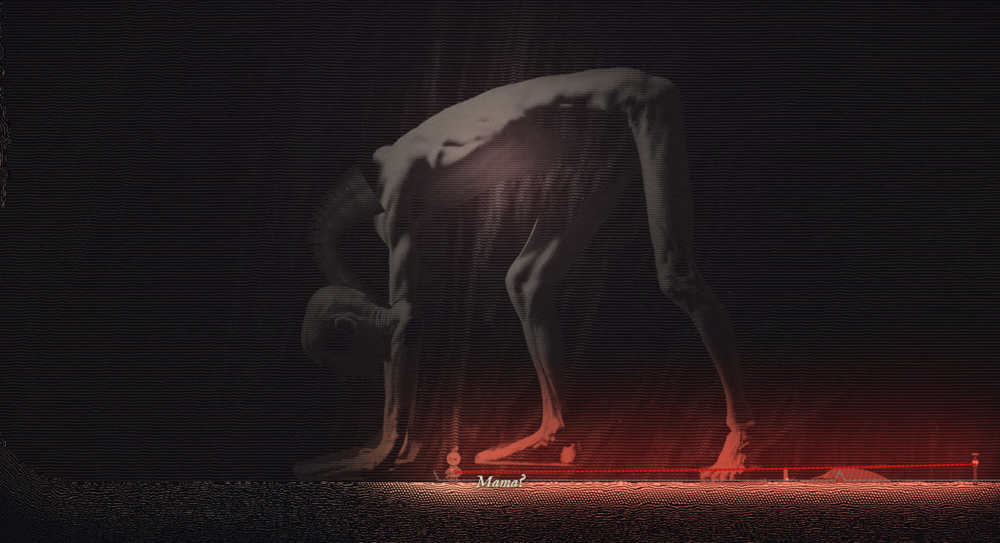
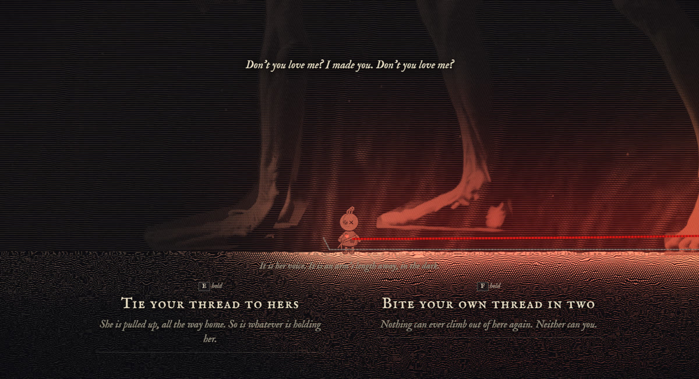
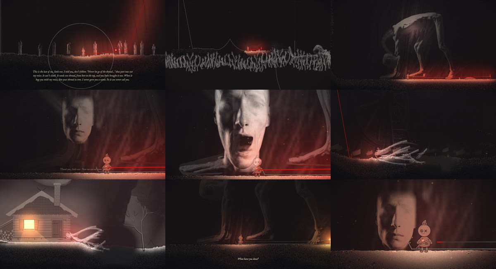
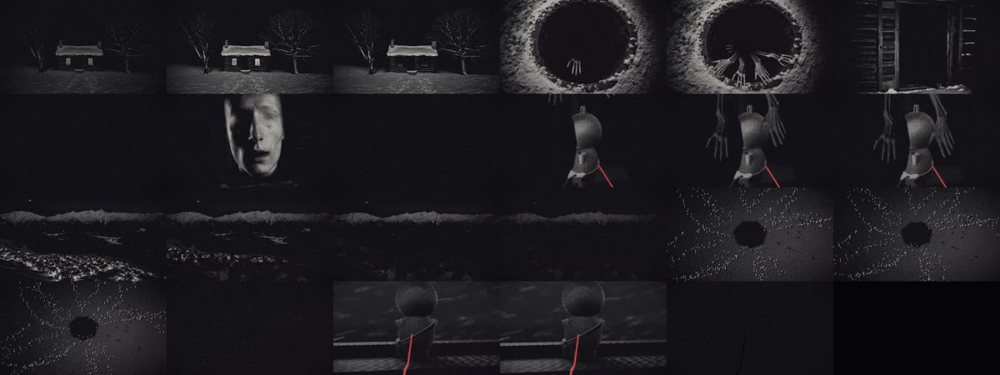

The end is newfrom the Loom to the last card
Everything from the floor of the Loom to the last card is remade: the Loom itself, the finale, both endings, the film and what comes after the credits. The old woman's model is not in any of it. What is down there is never explained; why it calls names, what your two choices do and what happens to the knitter and the doll now are.
The pictures and the plot are sealed below; I'd play it first. Finishing the old ending cleared your save, so I added to-the-loom.cmd in the game's folder: it opens the game with Go to the Loom on the title menu. From now on a run keeps its save after an ending, so Continue takes you back to the choice and you can see the other one.
What you did for the ending of this game is not terrifying or even scary, but rather super cringe. I need you to completely remake it to something actually terrifying, unexplainable and pure horror.
And also make the ending clearer regarding why something was calling names, what choices I have in the end and what happens with the knitter and the doll. Right now it is ambiguous.
| Your question | Where it is answered |
|---|---|
| Why it calls names | Three knots on the way down, at the Ink Mere, the Hall of Chairs and the Treadles, each one piece of it, and one keepsake. They build on each other and don't contradict. |
| What it wants | The last knot, on the floor of the Loom, says it in plain words. Nothing attacks until it has finished speaking. |
| What my choices are | Both are shown on screen together, each with a line saying what it does. The key is held for over a second, so neither can be pressed by accident. |
| What happens to the knitter and the doll | Four or five cards at the end of each ending say so directly, one sentence each. |


BeforeAfterDrag the thread to compare


BeforeAfterDrag the thread to compare
Why names. A child fell down the well and called for her mother. Something listened, and learned that when you call a name, someone comes down. It sits whoever comes in a chair and asks who they miss; that is how it gets the next name. The knitter's husband said hers.
The choice. It cannot climb. It needs one thread from the bottom to the top, and you have laid it one. The knitter is already dead; the voice is bait. Tie, and it climbs out. Bite your own thread, and it never can, and the doll stays. She was never given a name, so it cannot call her.




Both endings were run from the choice to the credits in the hidden test window, with a held key for each, and the film played through. The climb through the Loom was replayed by the physics bot at several timings: it is winnable, at the same pace as before. Every recorded line was transcribed back and matched against the script. I can't hear it or be frightened by it, so whether it lands is for you to say.
app/src/ending.jsThe approach, the held choice, both timelines, the closing cards.app/src/drawend.js · deep.jsEverything new in the Loom and at its top, and the hands.scripts/art/caller.py · facework.py · cutout.pyThe pictures it is drawn from.scripts/cine/plates.py · edit.pyThe film.scripts/voice/lines.pyThe lines. docs/STORY.md has the whole plot (spoilers).